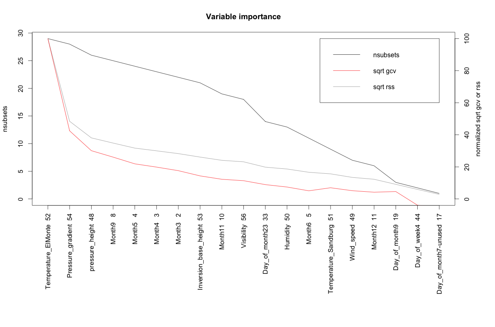
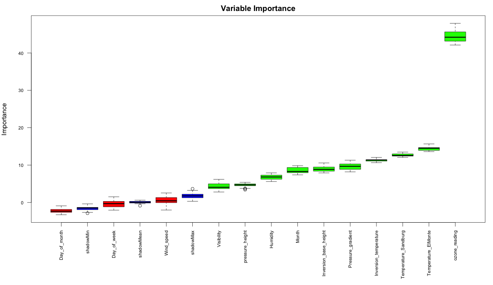

Feature Selection Approaches
Finding the most important predictor variables (of features) that explains major part of variance of the response variable is key to identify and build high performing models.
Import Data
For illustrating the various methods, we will use the ‘Ozone’ data from ‘mlbench’ package, except for Information value method which is applicable for binary categorical response variables.
inputData <- read.csv("http://rstatistics.net/wp-content/uploads/2015/09/ozone1.csv", stringsAsFactors=F)1. Random Forest Method
Random forest can be very effective to find a set of predictors that best explains the variance in the response variable.
library(party)
cf1 <- cforest(ozone_reading ~ . , data= inputData, control=cforest_unbiased(mtry=2,ntree=50)) # fit the random forest
varimp(cf1) # get variable importance, based on mean decrease in accuracy
#=> Month Day_of_month Day_of_week
#=> 0.689167598 0.115937291 -0.004641633
#=> pressure_height Wind_speed Humidity
#=> 5.519633507 0.125868789 3.474611356
#=> Temperature_Sandburg Temperature_ElMonte Inversion_base_height
#=> 12.878794481 14.175901506 4.276103121
#=> Pressure_gradient Inversion_temperature Visibility
#=> 3.234732558 11.738969777 2.283430842
varimp(cf1, conditional=TRUE) # conditional=True, adjusts for correlations between predictors
#=> Month Day_of_month Day_of_week
#=> 0.08899435 0.19311805 0.02526252
#=> pressure_height Wind_speed Humidity
#=> 0.35458493 -0.19089686 0.14617239
#=> Temperature_Sandburg Temperature_ElMonte Inversion_base_height
#=> 0.74640367 1.19786882 0.69662788
#=> Pressure_gradient Inversion_temperature Visibility
#=> 0.58295887 0.65507322 0.05380003
varimpAUC(cf1) # more robust towards class imbalance.
#=> Month Day_of_month Day_of_week
#=> 1.12821259 -0.04079495 0.07800158
#=> pressure_height Wind_speed Humidity
#=> 5.85160593 0.11250973 3.32289714
#=> Temperature_Sandburg Temperature_ElMonte Inversion_base_height
#=> 11.97425093 13.66085973 3.70572939
#=> Pressure_gradient Inversion_temperature Visibility
#=> 3.05169171 11.48762432 2.041459302. Relative Importance
Using calc.relimp {relaimpo}, the relative importance of variables fed into a lm model can be determined as a relative percentage.
library(relaimpo)
lmMod <- lm(ozone_reading ~ . , data = inputData) # fit lm() model
relImportance <- calc.relimp(lmMod, type = "lmg", rela = TRUE) # calculate relative importance scaled to 100
sort(relImportance$lmg, decreasing=TRUE) # relative importance
#=> Temperature_ElMonte Temperature_Sandburg Inversion_temperature
#=> 0.2297491560 0.2095385438 0.1692950876
#=> pressure_height Inversion_base_height Humidity
#=> 0.1104276154 0.1000912612 0.0833080699
#=> Visibility Pressure_gradient Month
#=> 0.0433277042 0.0320457048 0.0164342902
#=> Wind_speed Day_of_month Day_of_week
#=> 0.0034984964 0.0016927799 0.00059129064. MARS
The earth package implements variable importance based on Generalized cross validation (GCV), number of subset models the variable occurs (nsubsets) and residual sum of squares (RSS).
library(earth)
marsModel <- earth(ozone_reading ~ ., data=inputData) # build model
ev <- evimp (marsModel) # estimate variable importance
#=> nsubsets gcv rss
#=> Temperature_ElMonte 29 100.0 100.0
#=> Pressure_gradient 28 42.5 48.4
#=> pressure_height 26 30.1 38.1
#=> Month9 25 26.1 34.8
#=> Month5 24 21.9 31.7
#=> Month4 23 19.9 30.0
#=> Month3 22 17.6 28.3
#=> Inversion_base_height 21 14.4 26.1
#=> Month11 19 12.3 24.1
#=> Visibility 18 11.4 23.2
#=> Day_of_month23 14 8.9 19.8
#=> Humidity 13 7.4 18.7
#=> Month6 11 5.1 16.6
#=> Temperature_Sandburg 9 7.0 15.6
#=> Wind_speed 7 5.1 13.4
#=> Month12 6 4.2 12.3
#=> Day_of_month9 3 4.6 9.1
#=> Day_of_week4 2 -3.9 5.9
#=> Day_of_month7-unused 1 -4.7 2.8
plot(ev)
5. Step-wise Regression
If you have large number of predictors (> 15), split the inputData in chunks of 10 predictors with each chunk holding the responseVar.
base.mod <- lm(ozone_reading ~ 1 , data= inputData) # base intercept only model
all.mod <- lm(ozone_reading ~ . , data= inputData) # full model with all predictors
stepMod <- step(base.mod, scope = list(lower = base.mod, upper = all.mod), direction = "both", trace = 0, steps = 1000) # perform step-wise algorithm
shortlistedVars <- names(unlist(stepMod[[1]])) # get the shortlisted variable.
shortlistedVars <- shortlistedVars[!shortlistedVars %in% "(Intercept)"] # remove intercept
print(shortlistedVars)
#=> [1] "Temperature_Sandburg" "Humidity" "Temperature_ElMonte"
#=> [4] "Month" "pressure_height" "Inversion_base_height"The output could includes levels within categorical variables, since ‘stepwise’ is a linear regression based technique, as seen above.
If you have a large number of predictor variables (100+), the above code may need to be placed in a loop that will run stepwise on sequential chunks of predictors. The shortlisted variables can be accumulated for further analysis towards the end of each iteration. This can be very effective method, if you want to (i) be highly selective about discarding valuable predictor variables. (ii) build multiple models on the response variable.
6. Boruta
The ‘Boruta’ method can be used to decide if a variable is important or not.
library(Boruta)
# Decide if a variable is important or not using Boruta
boruta_output <- Boruta(ozone_reading ~ ., data=na.omit(inputData), doTrace=2) # perform Boruta search
# Confirmed 10 attributes: Humidity, Inversion_base_height, Inversion_temperature, Month, Pressure_gradient and 5 more.
# Rejected 3 attributes: Day_of_month, Day_of_week, Wind_speed.
boruta_signif <- names(boruta_output$finalDecision[boruta_output$finalDecision %in% c("Confirmed", "Tentative")]) # collect Confirmed and Tentative variables
print(boruta_signif) # significant variables
#=> [1] "Month" "ozone_reading" "pressure_height"
#=> [4] "Humidity" "Temperature_Sandburg" "Temperature_ElMonte"
#=> [7] "Inversion_base_height" "Pressure_gradient" "Inversion_temperature"
#=> [10] "Visibility"
plot(boruta_output, cex.axis=.7, las=2, xlab="", main="Variable Importance") # plot variable importance
7. Information value and Weight of evidence
The InformationValue package provides convenient functions to compute weights of evidence and information value for categorical variables.
Weights of Evidence (WOE) provides a method of recoding a categorical X variable to a continuous variable. For each category of a categorical variable, the WOE is calculated as:
$$WOE = ln \left(\frac{percentage\ good\ of\ all\ goods}{percentage\ bad\ of\ all\ bads}\right)$$
In above formula, ‘goods’ is same as ‘ones’ and ‘bads’ is same as ‘zeros’.
Information Value (IV) is a measure of the predictive capability of a categorical x variable to accurately predict the goods and bads. For each category of x, information value is computed as:
$$Information Value_{category} = {percentage\ good\ of\ all\ goods - percentage\ bad\ of\ all\ bads \over WOE} $$
The total IV of a variable is the sum of IV’s of its categories.
Example
Let me demonstrate how to create the weights of evidence for categorical variables using the WOE function in InformationValue pkg. For this we will use the adult data as imported below. The response variable in adult is the ABOVE50K which indicates if the yearly salary of the individual in that row exceeds $50K. We have a number of predictor variables originally, out of which few of them are categorical variables. On these categorical variables, we will derive the respective WOEs using the InformationValue::WOE function. Then, lets find out the InformationValue:IV of all categorical variables.
Install package from github
library(devtools)
install_github("selva86/InformationValue")Import the data
library(InformationValue)
inputData <- read.csv("http://rstatistics.net/wp-content/uploads/2015/09/adult.csv")
head(inputData)
#=> AGE WORKCLASS FNLWGT EDUCATION EDUCATIONNUM MARITALSTATUS
#=> 1 39 State-gov 77516 Bachelors 13 Never-married
#=> 2 50 Self-emp-not-inc 83311 Bachelors 13 Married-civ-spouse
#=> 3 38 Private 215646 HS-grad 9 Divorced
#=> 4 53 Private 234721 11th 7 Married-civ-spouse
#=> 5 28 Private 338409 Bachelors 13 Married-civ-spouse
#=> 6 37 Private 284582 Masters 14 Married-civ-spouse
# OCCUPATION RELATIONSHIP RACE SEX CAPITALGAIN CAPITALLOSS
#=> 1 Adm-clerical Not-in-family White Male 2174 0
#=> 2 Exec-managerial Husband White Male 0 0
#=> 3 Handlers-cleaners Not-in-family White Male 0 0
#=> 4 Handlers-cleaners Husband Black Male 0 0
#=> 5 Prof-specialty Wife Black Female 0 0
#=> 6 Exec-managerial Wife White Female 0 0
# HOURSPERWEEK NATIVECOUNTRY ABOVE50K
#=> 1 40 United-States 0
#=> 2 13 United-States 0
#=> 3 40 United-States 0
#=> 4 40 United-States 0
#=> 5 40 Cuba 0
#=> 6 40 United-States 0Calculate the Information Values
Below, the information value of each categorical variable is calculated using the InformationValue::IV and the strength of each variable is contained within the howgood attribute in the returned result. If you are want to dig further into the IV of individual categories within a categorical variable, the InformationValue::WOETable will be helpful.
factor_vars <- c ("WORKCLASS", "EDUCATION", "MARITALSTATUS", "OCCUPATION", "RELATIONSHIP", "RACE", "SEX", "NATIVECOUNTRY") # get all categorical variables
all_iv <- data.frame(VARS=factor_vars, IV=numeric(length(factor_vars)), STRENGTH=character(length(factor_vars)), stringsAsFactors = F) # init output dataframe
for (factor_var in factor_vars){
all_iv[all_iv$VARS == factor_var, "IV"] <- InformationValue::IV(X=inputData[, factor_var], Y=inputData$ABOVE50K)
all_iv[all_iv$VARS == factor_var, "STRENGTH"] <- attr(InformationValue::IV(X=inputData[, factor_var], Y=inputData$ABOVE50K), "howgood")
}
all_iv <- all_iv[order(-all_iv$IV), ] # sort
#> VARS IV STRENGTH
#> RELATIONSHIP 1.53560810 Highly Predictive
#> MARITALSTATUS 1.33882907 Highly Predictive
#> OCCUPATION 0.77622839 Highly Predictive
#> EDUCATION 0.74105372 Highly Predictive
#> SEX 0.30328938 Highly Predictive
#> WORKCLASS 0.16338802 Highly Predictive
#> NATIVECOUNTRY 0.07939344 Somewhat Predictive
#> RACE 0.06929987 Somewhat PredictiveCompute the weights of evidence (optional)
Optionally, we could create the weights of evidence for the factor variables and use it as continuous variables in place of the factors.
for(factor_var in factor_vars){
inputData[[factor_var]] <- WOE(X=inputData[, factor_var], Y=inputData$ABOVE50K)
}
#> AGE WORKCLASS FNLWGT EDUCATION EDUCATIONNUM MARITALSTATUS OCCUPATION
#> 1 39 0.1608547 77516 0.7974104 13 -1.8846680 -0.713645
#> 2 50 0.2254209 83311 0.7974104 13 0.9348331 1.084280
#> 3 38 -0.1278453 215646 -0.5201257 9 -1.0030638 -1.555142
#> 4 53 -0.1278453 234721 -1.7805021 7 0.9348331 -1.555142
#> 5 28 -0.1278453 338409 0.7974104 13 0.9348331 0.943671
#> 6 37 -0.1278453 284582 1.3690863 14 0.9348331 1.084280
#> RELATIONSHIP RACE SEX CAPITALGAIN CAPITALLOSS HOURSPERWEEK
#> 1 -1.015318 0.08064715 0.3281187 2174 0 40
#> 2 0.941801 0.08064715 0.3281187 0 0 13
#> 3 -1.015318 0.08064715 0.3281187 0 0 40
#> 4 0.941801 -0.80794676 0.3281187 0 0 40
#> 5 1.048674 -0.80794676 -0.9480165 0 0 40
#> 6 1.048674 0.08064715 -0.9480165 0 0 40
#> NATIVECOUNTRY ABOVE50K
#> 1 0.02538318 0
#> 2 0.02538318 0
#> 3 0.02538318 0
#> 4 0.02538318 0
#> 5 0.11671564 0
#> 6 0.02538318 0The newly created woe variables can alternatively be in place of the original factor variables.